01 / Forma
La cupola
Una sagoma immediatamente associabile al teatro e abbastanza forte da diventare il punto di partenza del concept.
Una proposta individuale di logo design nata dall’osservazione dell’architettura del Teatro Petruzzelli e dalla ricerca di un simbolo essenziale, riconoscibile e versatile.
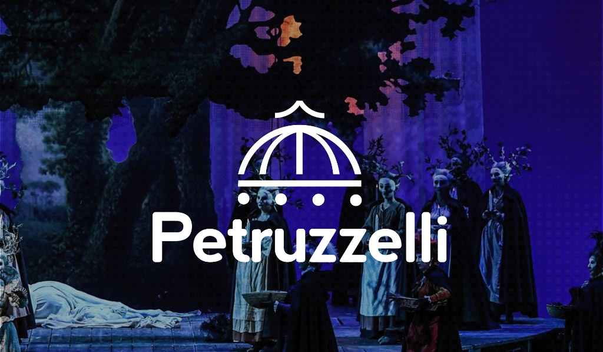
L’obiettivo era creare un segno riconoscibile e contemporaneo, capace di distinguersi senza perdere il legame con il teatro. La ricerca ha quindi cercato una forma semplice, chiara e abbastanza versatile da funzionare su supporti e formati diversi.
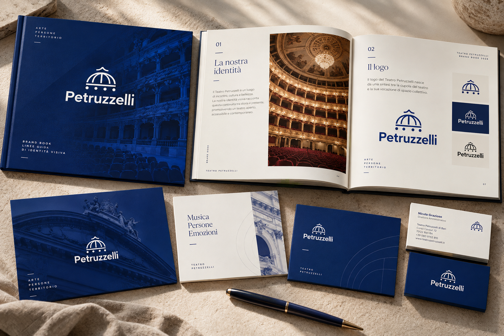
logo-overview.webpIl punto di partenza è stato il teatro stesso. Tra i suoi elementi, la cupola è diventata il riferimento più forte per costruire un segno riconoscibile.
L’ho osservata da più punti di vista, cercando le linee, i ritmi e le proporzioni che la rendono caratteristica. L’idea non era disegnarla in modo realistico, ma capire quali elementi potessero essere ridotti e trasformati in un linguaggio grafico.
Una sagoma immediatamente associabile al teatro e abbastanza forte da diventare il punto di partenza del concept.
Curve, assi e strutture radiali aiutano a leggere la forma e a capire cosa può essere semplificato.
La complessità architettonica viene progressivamente ridotta fino a diventare un segno autonomo.
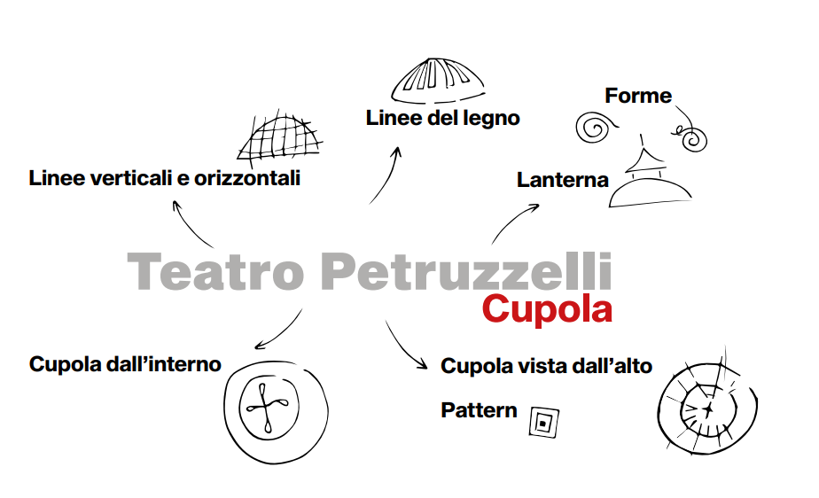
ricerca-cupola.png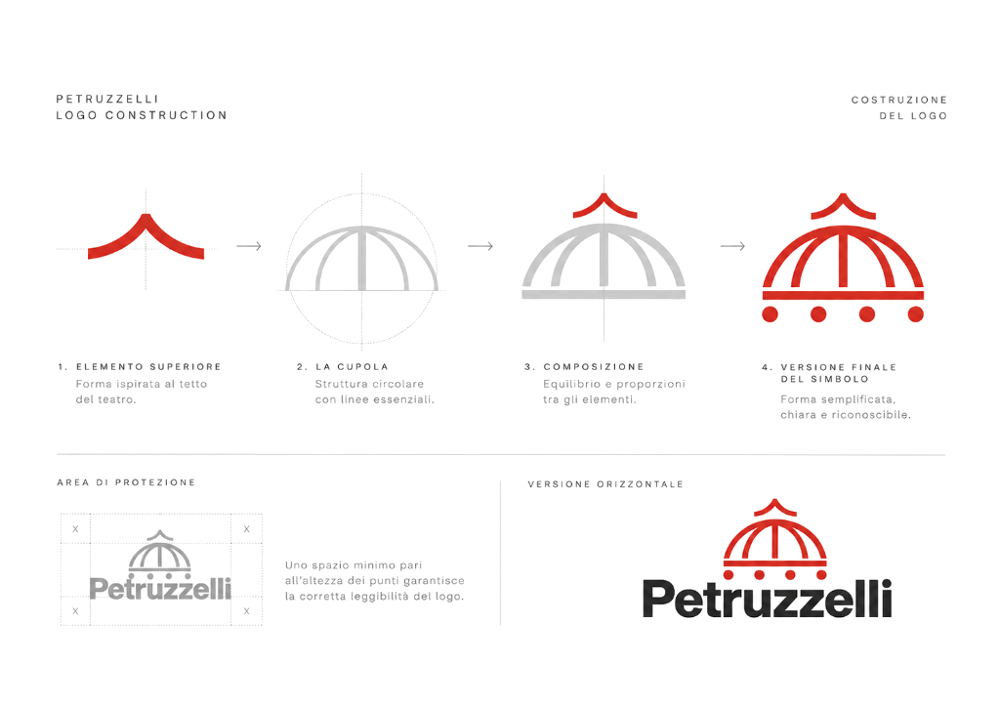
mappa-concettuale.pngIl confronto non serve a trovare un modello da copiare, ma a capire quali codici ricorrono nel settore e dove può aprirsi uno spazio per un linguaggio diverso.
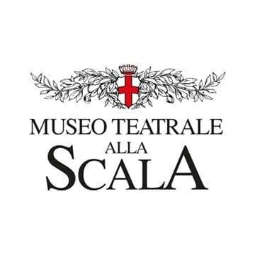
benchmark-scala.pngUn’identità fortemente legata alla tradizione e a un immaginario storico riconoscibile.
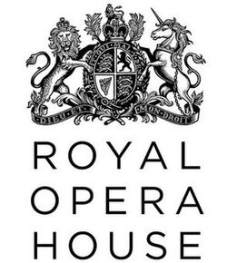
benchmark-roh.pngUn marchio con una presenza istituzionale forte, costruito intorno alla riconoscibilità del nome e del simbolo.
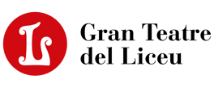
benchmark-liceu.pngUn linguaggio più sintetico e contemporaneo, dove la geometria assume un ruolo centrale.
tester-bianco.pngLa direzione esplora un’altra strada: usare un elemento dell’edificio come origine di un pittogramma semplice e autonomo.
Il passaggio decisivo è stato trasformare i riferimenti architettonici in una struttura più semplice, mantenendo la percezione della cupola senza descriverla letteralmente.
Individuare ciò che rende la cupola riconoscibile.
Separare curve, assi, ritmi e rapporti tra le parti.
Dare ordine alla forma attraverso proporzioni, reticolo e griglie polari.
Arrivare a un pittogramma leggibile anche separato dal logotipo.
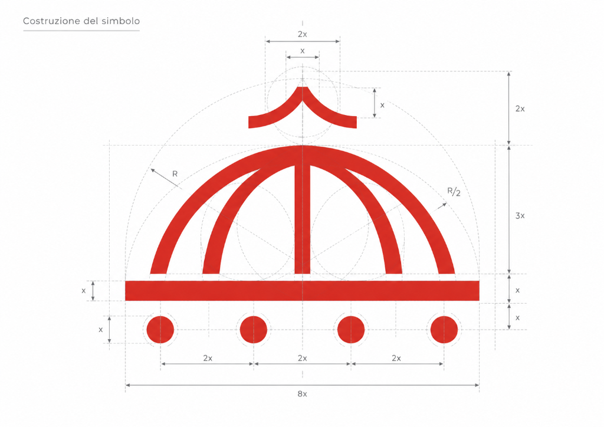
costruzione-logo.pngLa griglia mi ha aiutato a controllare proporzioni e simmetrie, trasformando la forma della cupola in un segno più essenziale e riproducibile.
Il confronto aiuta a rendere evidente il punto di partenza della mia proposta: non reinterpretare il logo attuale, ma cercare un segno attraverso un altro elemento identitario del teatro.
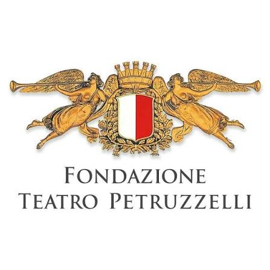
logo-attuale-petruzzelli.jpgIl riferimento istituzionale da cui parte l’esercizio: un’identità già riconoscibile, con un proprio linguaggio e una propria storia.
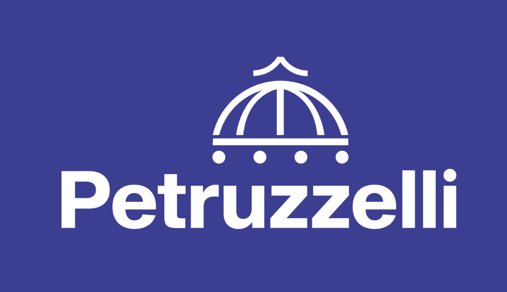
tester-blu.pngUn approccio che parte dall’architettura e concentra l’attenzione sulla cupola, trasformandola in un pittogramma geometrico e autonomo.
Una volta definito il segno, il passo successivo è verificare come si comporta quando cambia il contesto: fondo, contrasto e dimensione.
Più che descriverne la versatilità, qui preferisco mostrarla. Il tester permette di vedere il marchio in condizioni diverse e di valutarne rapidamente la presenza visiva.
tester-bianco.pngSequel Sans completa il segno con un linguaggio tipografico essenziale e contemporaneo. Le sue forme pulite dialogano con la costruzione geometrica della cupola, mantenendo equilibrio tra carattere, leggibilità e semplicità. La scelta permette al marchio di adattarsi con chiarezza a scale e supporti diversi.
Le applicazioni chiudono il percorso mostrando il marchio fuori dalla tavola di costruzione, su alcuni dei supporti sviluppati nel progetto.
Qui manterrei una selezione breve e molto visiva: pochi mockup, tutti realizzati da me, per lasciare che sia il progetto a parlare senza costruire un sistema di brand più esteso di quello realmente sviluppato.
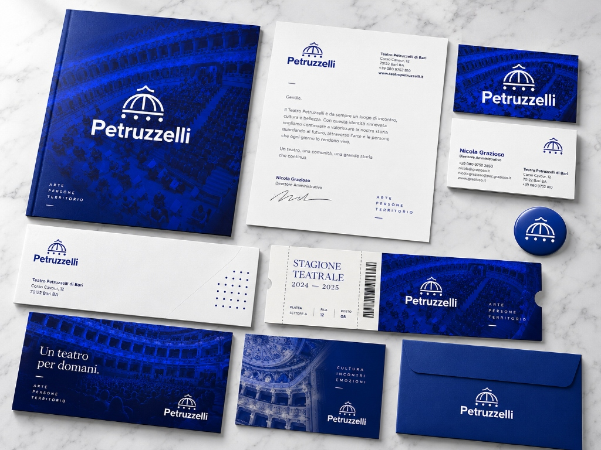
coordinato-identita.webp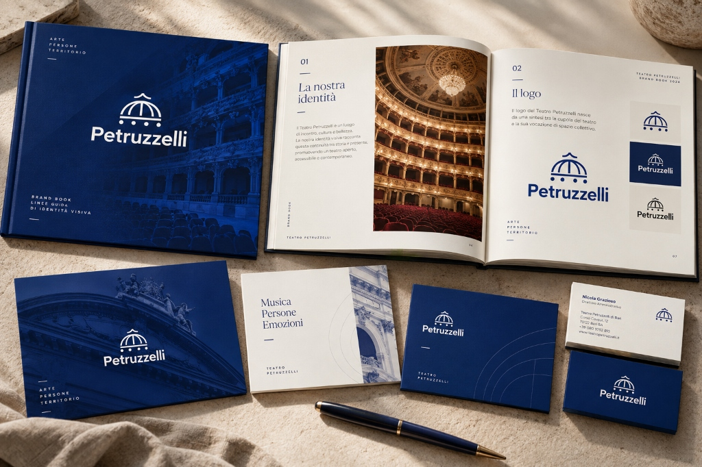
applicazione-02.webp